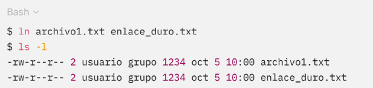
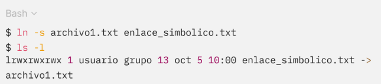
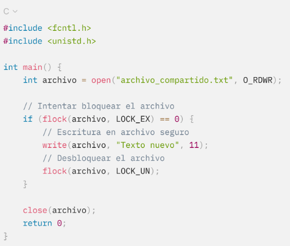

4.2.3 Archivos compartidos
La compartición de archivos es fundamental en sistemas multiusuario o en redes, donde múltiples usuarios y aplicaciones pueden necesitar acceder al mismo archivo simultáneamente. La implementación de archivos compartidos enfrenta desafíos como la gestión de permisos, la sincronización de acceso y la coherencia de los datos.
Un enlace duro es una referencia en el sistema de archivos que señala la misma ubicación en el disco que otro archivo. Ambos archivos tienen el mismo nombre para el sistema, por lo que cualquier cambio en uno se refleja en el otro. Sin embargo, estos enlaces solo pueden crearse dentro del mismo sistema de archivos.
A continuación, se presenta un ejemplo ilustrativo de enlace duro en Linux usando el comando ln, ambos archivos comparten el mismo contenido.
Código 4.
Uso de comando ln.

El archivo1.txt y enlace_duro.txt son dos nombres que apuntan al mismo contenido en el disco.
Los enlaces simbólicos son archivos que actúan como referencias a otros archivos o directorios. A diferencia de los enlaces duros, los enlaces simbólicos pueden apuntar a archivos en diferentes sistemas de archivos o discos. No obstante, si el archivo original se elimina, el enlace simbólico se vuelve inválido, conocido como un enlace roto.
A continuación, se presenta un ejemplo de uso del comando ln -s.
Código 5.
Creación de enlace simbólico en Linux.

Dado que enlace_simbolico.txt apunta a archivo1.txt. Si se elimina archivo1.txt, el enlace simbólico quedará roto.
Cuando varios usuarios o procesos acceden simultáneamente a un archivo compartido, el sistema de archivos utiliza mecanismos como los bloqueos de archivos (file locks) para evitar conflictos y garantizar la coherencia de los datos. Estos bloqueos pueden ser de lectura o escritura, asegurando que otros procesos no puedan modificar el archivo mientras está bloqueado. En Linux, se utiliza la función flock() para bloquear un archivo y garantizar que solo un proceso pueda escribir en él en un momento dado.
Código 6.
Ejemplo de bloqueo de archivos.

La implementación del sistema de archivos incluye la gestión eficiente de archivos, directorios y archivos compartidos. El sistema operativo debe equilibrar el uso del espacio en disco, el rendimiento y la coherencia de los datos para garantizar un acceso rápido y seguro a la información. Métodos como la asignación contigua, enlazada e indexada ayudan a gestionar eficientemente los archivos, mientras que los directorios jerárquicos facilitan la organización de los datos. La compartición de archivos se logra mediante enlaces duros, simbólicos y mecanismos de control de acceso concurrente, permitiendo la colaboración entre usuarios y procesos.